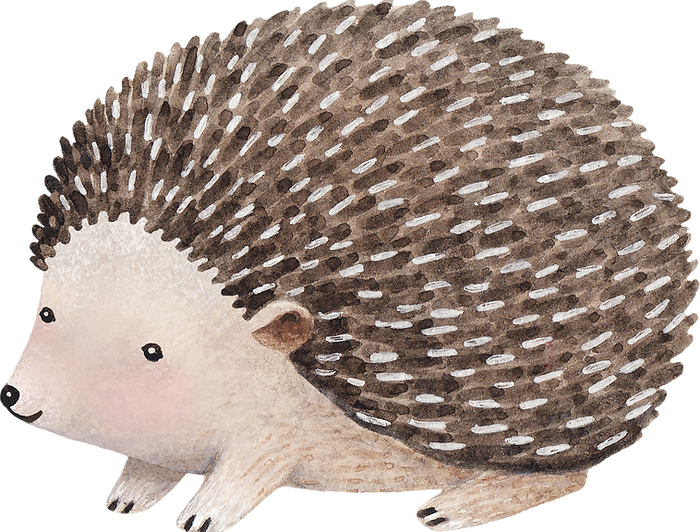

 Psicoterapia infantil La infancia es una etapa muy importante en la vida de las personas, donde aprendemos a relacionarnos con el mundo, cómo nos posicionamos ante él y dónde comenzamos a construir la propia identidad. Para mí, es fundamental atender y acompañar a los niños y niñas y sus papas cuando aparece algún conflicto o alguna dificultad. El abordaje temprano de esto da la oportunidad a la familia de desarrollarse y gestionar aquello que les genera malestar o sufrimiento.